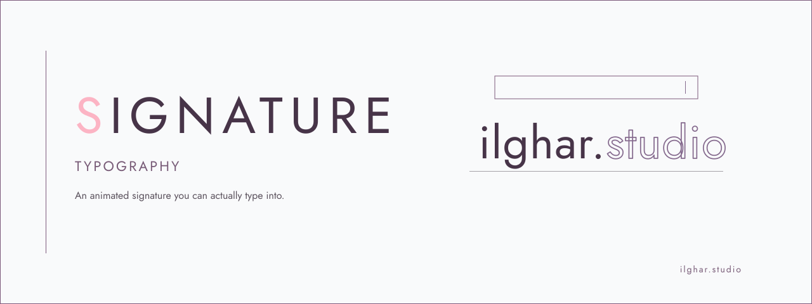

ilghar.studio | signature
Signature typography
Typed signature
Tracesettleexport
In progress
Live function
Proof
Native field
Keyboards, paste, IME and screen readers stay intact.
Graphemes
Intl.Segmenter keeps emoji, accents and ZWNJ whole.
Motion
prefers-reduced-motion draws the signature at once.
How it works
- A labelled native field drives a stroke-dash trace that settles into ink.
- Unmapped characters stay visible as a dashed fallback and are announced.
- Light and dark follow the system or the toggle; SVG export matches the theme.